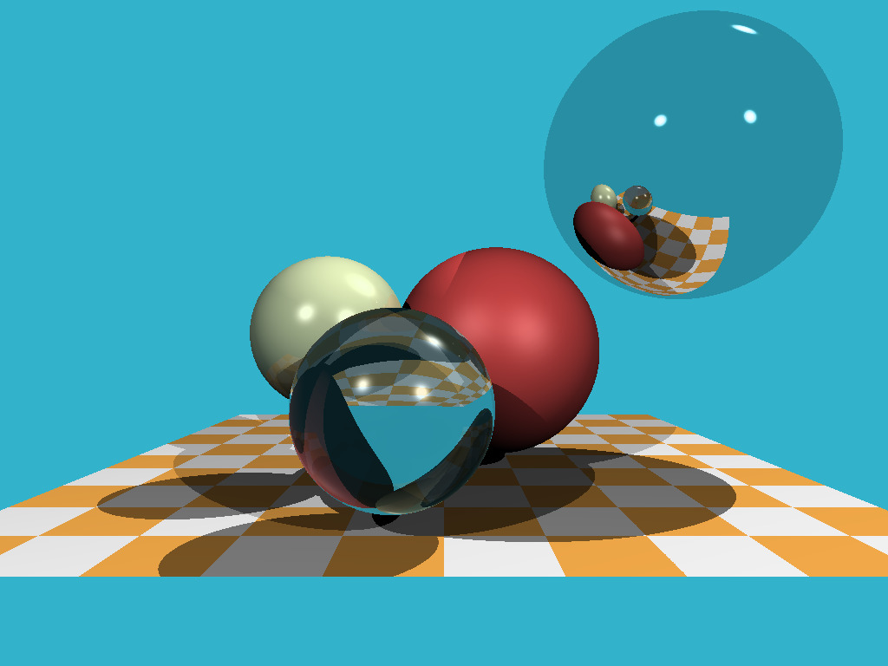
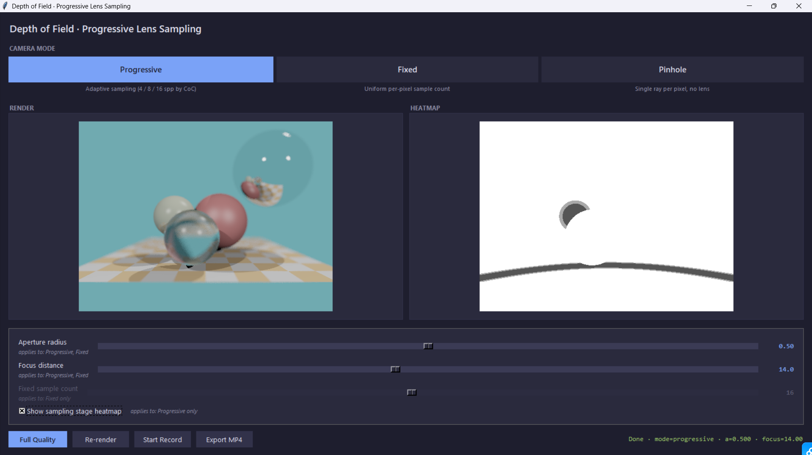
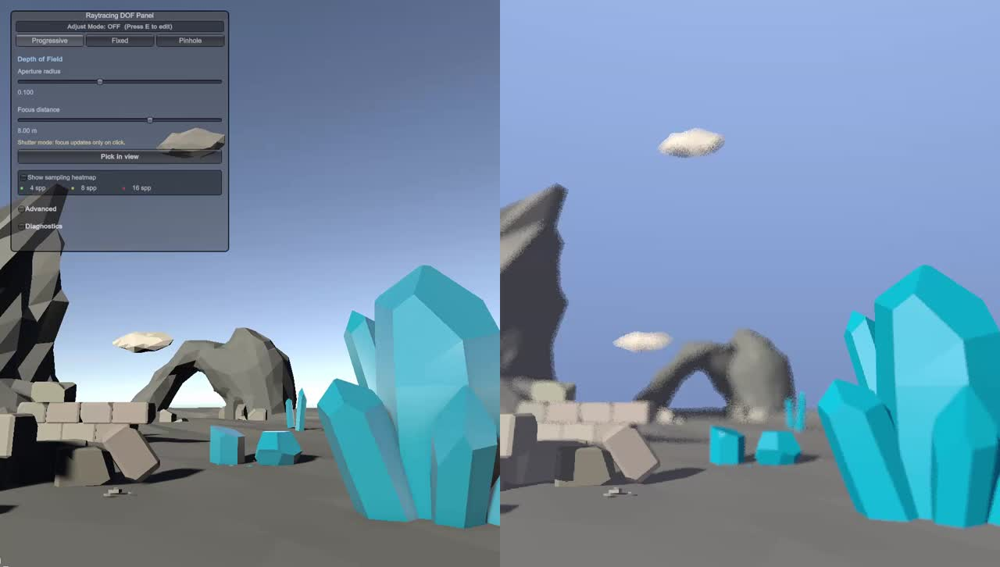

在 Unity 里做一个能
实时调焦的光线追踪器。
从跟着 YouTube 教程学光追，到自己写一个带景深的 CPU 渲染器， 最后把它塞进 Unity，做成一个可以实时点哪聚焦哪的小工具。 这是我们这学期做的事。
从跟着 YouTube 教程学光追，到自己写一个带景深的 CPU 渲染器， 最后把它塞进 Unity，做成一个可以实时点哪聚焦哪的小工具。 这是我们这学期做的事。
我们没有从零自己开始写。先去找了 QuantitativeBytes 的 qbRayTrace 系列: 作者把整个开发过程录成了一整套 YouTube 教程， 一节一节往上叠功能，跟着敲就能从空工程一直推到一个能跑的 C++ 光追器。 作为"备查参考"的是 tinyraytracer。 它把整个东西压在 200 行里，没有抽象层，看不懂某个机制时回去翻它的实现往往最快。

跑通之后我们开始随便改改，挪球的位置、改光源方向、调折射 IOR。 改得多了就直观感觉到这一类教学版的局限：能放的物体只有球；相机是针孔的，没有"光圈"； 改完一个数字要重编译再跑一次再开 PPM，调一次参数得等好几秒；渲染单线程，图大一点就要等。 这些都成了阶段 2、3 想去解决的问题。
这里把跟着教程学下来之后，我们对光追原理的理解整理一下。 核心思路其实非常简单：屏幕上每一个像素，都对应着真实世界里"从相机出发、穿过这个像素去看"的一条视线。 光追做的事就是把这条视线沿着反方向追出去：从相机出发， 看它打到场景里的哪个点，再算这个点应该是什么颜色。
光线本身就是一条参数化的射线，起点 o、方向 d，
上面任意一点都可以写成：
然后用解析方法求解这条光线和场景里每个物体的交点（教学版里就是球，所以是个二次方程），
取最小的正 t，就找到了相机沿这个像素方向"第一个看到"的表面点。
找到交点之后，下一步是算这个点的颜色。如果是粗糙的漫反射表面，就直接用经典的着色模型 （Blinn–Phong 那一套：环境光 + 漫反射 + 高光），同时再额外打一条阴影光线到光源去， 看中间有没有被挡住，挡住了就是阴影。
但如果命中点是镜面或者玻璃，就得再发一条新光线继续追: 镜子按反射定律生成反射光线，玻璃按 Snell 定律算折射光线， 然后递归地对那条新光线再做一遍刚才的整个过程（求交、着色、可能再发新光线……）， 最后把递归回来的颜色叠回当前这个点。这就是 Whitted 在 1980 年提出的那种风格的光追器， 也是教学项目里最常实现的版本。整个过程可以非常粗糙地表达成：
其中 kr、kt 是反射和折射的系数（玻璃材质里通常用 Fresnel 给出）。
为了让递归不至于无限下去，给个最大递归深度，比如最多反射 5 次，超过就停下。
这就是阶段 1 我们跟着教程实现下来的全部内容。整个过程没有任何"光线之间互相打"的全局光照， 间接光、软阴影、焦散这些都不在 Whitted 的范畴里。那要等到 Kajiya 1986 年的渲染方程 才把"所有光照都是积分"这件事写清楚，并由蒙特卡洛路径追踪去近似它。 但对我们项目来说，Whitted 这一套已经足够了，因为我们想做的是景深， 而不是物理上完整的全局光照。下一阶段就要在这个基础上把相机模型从针孔换成薄透镜。
最大的收获不是学了某个具体的算法，而是发现自己原本对光追的"理解"是悬空的： 渲染方程、Whitted 递归这些课件里看一眼都能点头，但真正跟着教程把代码一行行敲完、再去调， 才知道很多细节自己之前是糊弄过去的。
阶段 2 我们脱开教程，自己写了一版 C++ 渲染器。这是项目第一个真正算"我们做的"东西， 重点放在两件事上：把相机模型从针孔换成薄透镜（这样才能有景深）， 以及让"调参 → 看结果"这件事尽可能不卡。

针孔相机生成的图永远全清晰，因为它根本没有光圈这个概念。 薄透镜模型就不一样：每条主光线的起点在一个圆盘上随机采样（这就是"光圈"），方向都指向焦平面上的同一个点。 光圈越大，焦平面以外的物体就会被多个不同采样路径打到不同的图像位置，这就是景深模糊。
薄透镜模型的代价是每个像素要发多条光线。但其实图像里大部分像素都不需要： 如果一个像素正好落在焦平面上，本来就该清晰，多采样几次也是同一个清晰结果。 所以我们做了一件简单但有效的事：用一条主光线先估算一下这个像素应该有多模糊（用弥散圆 CoC 度量）， 再决定给它几条采样光线：焦平面附近 4 条，过渡区 8 条，深度失焦区 16 条。
为了让"焦平面附近"这个判断在物体很近的时候也别抖，我们没用教科书里那个常见的距离形式 CoC， 而是用了倒深度形式：
其中 a 是光圈半径，df 是焦距。
这个形式对远物体和教材形式一致，但对近物体保持稳定，
并且对刚好落在焦平面上的物体精确返回 0，这个细节看着小，但实际效果差挺多。
UI 顶部把 Camera Mode 做成了三个并排的大按钮，对应三种渲染模式。
它们对应三个不同的"质量与速度的取舍点"：
1 spp，没有"光圈"这个概念，所有像素都只发一条光线。整张图永远全清晰，没有景深效果， 但速度最快。我们主要在调相机位置、看构图的时候用它做即时预览。
每个像素都用同样多的采样光线（4 / 8 / 16 等可选），bokeh 均匀平滑， 适合用来当画面质量的基准看效果"上限"。代价是图像里那些焦平面附近、 本来就清晰的像素也在被多次采样，算力被白浪费了。
就是上面讲的 4 / 8 / 16 spp 自动分配的那个方案，是默认工作模式。在大部分场景下能拿到 接近 16 spp 固定采样的视觉效果，但总光线数大约只有它的一半。
C++ 渲染器本身只能在命令行跑。为了能边调边看，我们用 Python 写了个 Tkinter 小窗口: 顶部是 Camera Mode 三按钮、左右两块画布同时显示渲染结果和 CoC 热力图、底部是参数滑块， 左下角还做了 Full Quality / Re-render / Start Record / Export MP4 几个工具按钮。 用户改动滑块或按钮时，后台 Python 线程就调一次 C++ 程序、把渲染结果回写成图像并刷到画布上。 渲染本身在 C++ 里用 OpenMP 并行起来，跑得不慢。 但每次滑动都启动一个新进程的代价是固定的，几十毫秒花在子进程启动和文件 I/O 上，渲染还没开始就已经掉帧了。
阶段 3 同时要做两件事：让渲染器支持任意三角网格（不能只能放球了）， 并彻底消掉阶段 2 那个"每帧启动一个新进程"的开销，让它直接在 Unity 里跑。
只支持球的渲染器没法用真实场景做演示。所以我们加了两样东西： 光线-三角形相交算法（用了经典的 Möller–Trumbore），以及一棵 BVH 加速结构来避免对每个三角形挨个测试。 BVH 用 SAH 启发式按表面积代价做切分，配合 slab 法做包围盒求交， 让一个有上万三角形的场景也能跑出可交互的帧率。
阶段 2 那种"启动子进程渲染再读 PPM"的模式被整个砍掉。我们把 C++ 核心编成 DLL， 在 Unity 的 C# 脚本里用 P/Invoke 直接调用它的渲染函数。 关键技巧是把像素 buffer 在 C# 端"钉住"（pin 起来不让 GC 搬动）， 把指针交给 C++，让它直接把 RGBA 写进这块内存， 托管和非托管之间没有发生拷贝，整套流程零开销。 然后 Unity 再把这块字节数组上传成 GPU 纹理显示出来。
就算上了零拷贝，CPU 渲染一帧 512×384 的薄透镜景深图还是要花一些时间，鼠标拖动相机的时候肯定撑不住。 办法很朴素：检测到用户在动（鼠标拖、键盘按、点击）， 就临时降到 320×180、关掉景深、切回针孔相机；用户一停手 0.2 秒后，再恢复全质量。 用户感受不到画质切换，因为他动的时候本来就在看大致构图，停下来才会去仔细看景深细节。
最后加了一个我们自己用得最爽的功能：仿单反相机的"点击对焦"。
用 Unity 自带的 Physics.Raycast 测一下鼠标指向的物体距离，
点一下就把这个距离同步到光追器的对焦距离参数。
指针移动时还有一个低频"探测光线"在背后跑，鼠标停在哪个物体上，
画面中央的小准星就会变绿告诉你"这里能聚上"。
演示场景使用的是 demo04 的场景和素材。

下面这段视频在 samplesence 场景里把三种相机模式各走了一遍。 所有模式都共用同一套交互:用鼠标在画面里点一下就当作"按快门"测距，UI 上可以实时调整光圈半径和对焦距离。 三个模式之间的差别在于这些参数对画面究竟起什么作用:
最难的那一跳并不是我们以为的那一跳。阶段 1 → 阶段 2 看起来吓人：我们要换相机模型！ 但那其实是一下午的活。真正难的是阶段 2 → 阶段 3：几何上要支持任意网格、架构上要消掉进程边界， 两个独立的大改动撞到一起，所以阶段 3 的开头一段时间是项目最容易崩盘的时刻。
过程中也踩了一些挺可笑的坑。最尴尬的一次是 Unity 编辑器抓着我们更新过的 C++ DLL 旧版本不放， 代码改了、行为还是老的，渲染结果悄无声息地是错的。我们一整下午都在确信"BVH 遍历有 bug"， 最后才发现执行的是三个版本之前的 BVH。从那以后每个版本的 DLL 都带一个版本号字段， Unity 启动时不对就报错。还有一次是早期景深里有微弱的"鬼影"， 原因是我们把光线偏置沿着相机前向做的，而不是沿着光线本身，一行代码的事，但找了大半天。
最让我们自己意外的是，那些原本只是为了调试而写的工具， 包括把每个像素染成绿/黄/红显示采样档位的诊断模式、Unity 光栅化和我们的光追器并排显示的分屏对比、 探针延迟的实时读数，最后全都成了真正能拿出来给人看的功能。 下次再做这种项目，我们会从第一天就开始建诊断层。